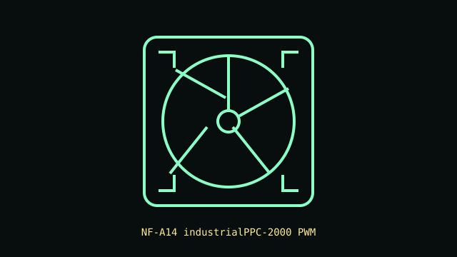

[ IDENTIFIED SKU // NF-A14 industrialPPC-2000 PWM ]
Noctua NF-A14 industrialPPC-2000 PWM
Industrial-grade 140 mm PWM fan with a glass-fiber-reinforced polyamide impeller, cataloged as the 2000 RPM 12 V model.

Recorded specifications
| Exact part | NF-A14 industrialPPC-2000 PWM (manufacturer model designation) |
|---|---|
| Frame / thickness | 140 × 140 × 25 mm |
| Speed / airflow / pressure / noise | 500–2000 RPM; up to 182.5 m³/h; 4.18 mm H₂O maximum static pressure; 31.5 dB(A). |
| Bearing | SSO2 self-stabilizing oil-pressure bearing |
| Electrical / control | 12 V DC; 0.13 A maximum input current; 4-pin PWM fan connector. |
| Case / radiator compatibility | Fits standard 140 mm fan positions with 25 mm depth. Suitable for case airflow and radiator positions when the mounting pattern, screw length, clearance, airflow direction and controller current rating are verified. Industrial speed and noise may not suit quiet builds. |
Installation notes
Use a 4-pin PWM-capable header for speed control. Confirm the 140 mm mount and allow the full frame depth; do not exceed the header or controller current rating.
Manufacturer sources
- Noctua product page — NF-A14 industrialPPC-2000 PWMProduct identity, performance, dimensions, bearing, connector and electrical specifications.
- Noctua technical data sheet — NF-A14 industrialPPC-2000 PWMManufacturer specification sheet for the recorded model.